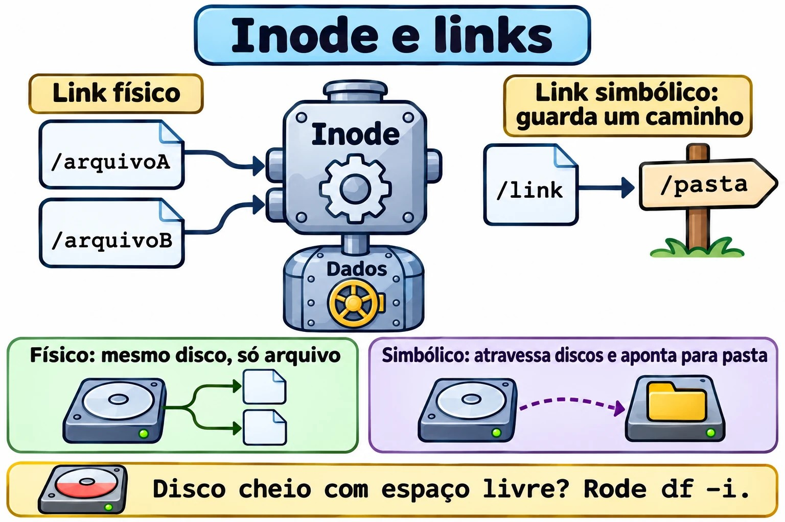
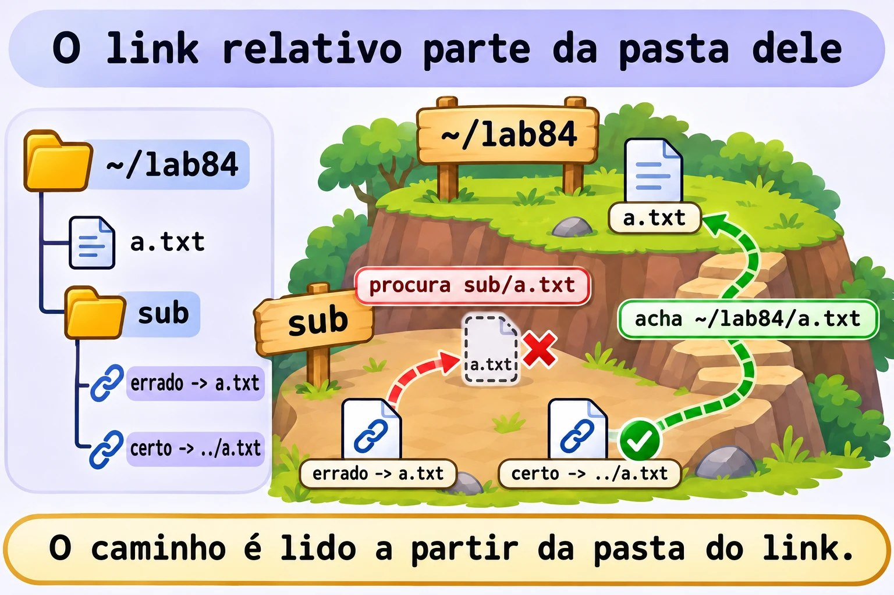
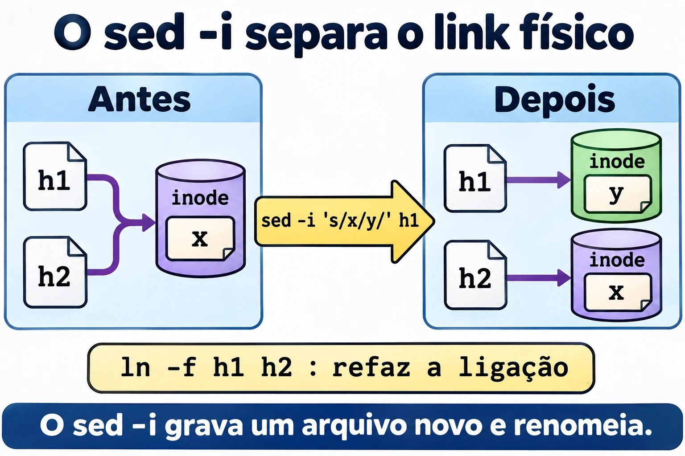

Aula 8.4 · Links
O nome de um arquivo não é o arquivo. Parece filosofia, mas explica por que um link quebra, por que um "disco cheio" pode ter muito espaço livre e por que o sed -i às vezes corta uma ligação sem avisar. Nesta aula você enxerga o inode e passa a prever o que acontece quando o original some.
Núcleo desta aula: entender o inode; criar links físicos e simbólicos; prever o que acontece quando o original some; escrever links relativos corretos; achar links quebrados; e diagnosticar a falta de inodes. O resto é aprofundamento.
| Ficha | |
|---|---|
| Módulo | M8 · Arquivos a fundo, aula 4 de 5 |
| Quando | Semana 13 |
| Ao final | Você escolhe o tipo certo de link e conserta os que quebraram |
| Pré-requisitos | Aulas 1.3, 2.8 e 8.2 |
| Tempo | cerca de 1h30 |
| Snapshots | m8a4-inicio e m8a4-fim na rocky-lab e na debian-lab |
1 · Aquecimento
Responda antes de ler.
- Onde fica guardado o nome de um arquivo: no próprio arquivo ou na pasta?
- Você apagou o original. O link físico ainda funciona? E o simbólico?
- O
df -hmostra 40% de uso e o sistema dizNo space left on device. Como pode?
2 · Por que importa
| O chamado | A resposta errada | O que ela causa |
|---|---|---|
| "O serviço não acha a pasta depois da atualização" | Reinstalar | Um link simbólico aponta para uma versão que não existe mais |
| "O disco está cheio, mas tem espaço" | Apagar arquivos grandes | Acabaram os inodes. São muitos arquivos pequenos |
| "Apaguei o arquivo e o espaço não voltou" | Reiniciar o servidor | Há outro link físico, ou o arquivo continua aberto |
"Tentei o link e deu Invalid cross-device link" | Copiar sem pensar | Link físico não atravessa discos |
| "Editei um e o outro não mudou" | Editar os dois | A ferramenta criou um arquivo novo e cortou a ligação |
3 · Modelo mental
O arquivo é uma pessoa, o inode é a ficha dela no RH, e o nome é um crachá. A ficha tem tudo, menos o nome. Um link físico é um segundo crachá para a mesma pessoa: ela só deixa a empresa quando o último crachá é devolvido. Um link simbólico é um bilhete dizendo "procure fulano na sala tal": se fulano mudou de sala, o bilhete continua na mesa, apontando para o nada.
PASTA (nomes) INODES (fichas) DADOS
┌───────────┬───────┐ ┌──────────────────┐
│ a.txt │ 1234 ─┼───┬─►│ 1234 links: 2 ├────► conteúdo
│ b.txt │ 1234 ─┼───┘ │ dono, modo, data │
│ s.txt │ 1250 ─┼─────►│ 1250 links: 1 │
└───────────┴───────┘ │ conteúdo: "a.txt"│ ──► resolve pelo NOME
└──────────────────┘
rm só apaga o nome. Quando os links chegam a 0 e ninguém o mantém aberto, os dados são liberados.

Ponte Windows
| No Windows | No Linux | Onde a comparação engana |
|---|---|---|
Atalho .lnk | Link simbólico | O atalho é coisa do Explorer. O simbólico vale para todo programa |
mklink | ln -s | Mesma ideia, com a ordem dos argumentos invertida: no Linux, é alvo e depois nome |
mklink /H | ln | Mesmas regras: só no mesmo volume, e só para arquivo |
mklink /J (junção) | ln -s para pasta | |
| Registro na MFT | Inode | |
| Pasta WinSxS, com links físicos | Links físicos em /usr | O tamanho exibido engana nos dois |
4 · O essencial
| Quero... | Comando |
|---|---|
| Ver o número do inode | ls -li |
| Ver inode e contagem | stat -c '%n inode=%i links=%h' ARQUIVO |
| Link físico | ln ORIGINAL NOME |
| Link simbólico | ln -s ALVO NOME |
| Trocar um link | ln -sfn ALVO NOME |
| Ver para onde aponta | readlink NOME |
| Ver o destino final | readlink -f NOME |
| Todos os nomes de um arquivo | find /caminho -xdev -samefile ARQUIVO |
| Buscar pelo inode | find /caminho -xdev -inum N |
| Achar links quebrados | find /caminho -xtype l |
| Ver o uso de inodes | df -i |
Comparação
| Físico | Simbólico | |
|---|---|---|
| Aponta para | O inode | Um caminho |
| Inode próprio | Não | Sim |
| Atravessa discos | Não | Sim |
| Aponta para pasta | Não | Sim |
| Se o original for apagado | Continua funcionando | Fica quebrado |
| Permissões | As do arquivo | Sempre lrwxrwxrwx; valem as do alvo |
Link relativo: o caminho é resolvido a partir da pasta onde o link está, e não de onde você rodou o comando.
/etc/alternatives: é a cadeia de links que permite escolher entre versões de um programa, como editor e java.
Rocky × Debian
Os comandos são iguais. Num Debian, o /etc/alternatives aparece mais no dia a dia. Numa Rocky, o alternatives faz o mesmo. A proteção fs.protected_hardlinks, ativa nas duas, impede que um usuário crie link físico para um arquivo que não é dele nem pode ler e gravar.
5 · Lab guiado
Passo 0 · Snapshots e preparo. No Proxmox: qm snapshot 201 m8a4-inicio e qm snapshot 202 m8a4-inicio. Na rocky-lab:
mkdir -p ~/lab84/sub && cd ~/lab84
echo original > a.txtPasso 1 · Criar e olhar.
ln a.txt b.txt
ln -s a.txt s.txt
ls -li a.txt b.txt s.txt
stat -c '%n inode=%i links=%h' a.txt b.txt s.txta.txt e b.txt têm o mesmo inode e contagem 2. s.txt tem inode próprio.
Passo 2 · Um arquivo, dois nomes.
echo mais >> b.txt
cat a.txtPasso 3 · O original some.
rm a.txt
cat b.txt
cat s.txt
ls -l s.txt
stat -c '%n links=%h' b.txtO b.txt continua intacto, e não existe "original": os nomes são equivalentes. O s.txt responde No such file or directory.
Passo 4 · O nome volta.
echo outro > a.txt
cat s.txt
cat b.txt
stat -c '%n inode=%i' a.txt b.txtO simbólico funciona de novo, porque só guarda o nome. Mas a.txt agora é outro arquivo, diferente de b.txt.
Passo 5 · Relativo a partir de onde?
ln -s a.txt sub/errado
cat sub/errado
readlink sub/errado
ln -s ../a.txt sub/certo
cat sub/certo
readlink -f sub/certoO sub/errado procura sub/a.txt.


Passo 6 · Os limites.
ln a.txt /dev/shm/x
ln sub sub2
ln -s ~/lab84/sub ~/lab84/atalho
ls atalhoO primeiro responde Invalid cross-device link, o segundo hard link not allowed for directory, e o simbólico funciona nos dois casos.
Passo 7 · Achar.
find . -samefile b.txt
find . -xtype l
find /usr/bin -type f -links +1 | head
ls -l /etc/alternatives | headPasso 8 · debian-lab. Repita os passos 1, 3 e 5.
Decida 1
Você faz deploy em /opt/app/releases/2026-11-09 e quer que o serviço sempre use a versão atual. Como?
A) Copiar cada versão por cima de /opt/app/current. B) Um simbólico current, com ln -sfn releases/2026-11-09 current. C) Um link físico.
Marque uma opção antes.
| Se você marcou | Resultado | Por quê |
|---|---|---|
| A | Sem retorno rápido | Durante a cópia há arquivos misturados |
| B | Certo | A troca é rápida, e voltar é apontar para a anterior |
| C | Impossível | Link físico não aponta para pasta |
Para fixar: o simbólico é o interruptor das versões.
Decida 2
Um script precisa manter vários dias de cópias de 100 GB, em que quase nada muda entre eles. Como economizar?
A) Copiar 100 GB por dia. B) Usar rsync --link-dest, com links físicos para o que não mudou. C) Links simbólicos.
Marque uma opção antes.
| Se você marcou | Resultado | Por quê |
|---|---|---|
| A | Desperdício | Duplica o que não mudou |
| B | Certo | Cada dia parece completo, e só os alterados ocupam espaço |
| C | Frágil | Apagado o dia original, as cópias quebram |
Para fixar: o link físico é o que permite o snapshot barato.
6 · Quebre e conserte
Quebra 1 · A versão que sumiu
cd ~/lab84
mkdir -p app/releases/v1
echo v1 > app/releases/v1/versao
ln -sfn releases/v1 app/current
cat app/current/versao
mv app/releases/v1 app/releases/v1-antiga
cat app/current/versaoSintoma: No such file or directory.
Diagnóstico: readlink app/current, find app -xtype l e ls app/releases.
Conserto: ln -sfn releases/v1-antiga app/current. Sem o -n, ele criaria o link dentro da pasta apontada, em vez de trocar.


Quebra 2 · O sed que cortou a ligação
echo x > h1
ln h1 h2
stat -c '%n %i %h' h1 h2
sed -i 's/x/y/' h1
stat -c '%n %i %h' h1 h2
cat h2Sintoma: h1 tem y, h2 tem x, e os inodes são diferentes.
Diagnóstico: o sed -i grava um arquivo novo e o renomeia. Muitos editores fazem o mesmo.
Conserto: ln -f h1 h2 refaz a ligação.
Na vida real: vale para configuração em hard link e para scripts que escrevem por meio de um simbólico.
Quebra 3 · Disco cheio com espaço livre
truncate -s 16M i.img
sudo mkfs.ext4 -q -N 128 i.img
sudo mkdir -p /mnt/lab84
sudo mount -o loop i.img /mnt/lab84
sudo chown $USER: /mnt/lab84
for i in $(seq 1 1000); do touch /mnt/lab84/f$i || break; done
df -h /mnt/lab84
df -i /mnt/lab84Sintoma: No space left on device, com o df -h mostrando espaço.
Diagnóstico: o df -i mostra IUse% em 100%.
Conserto: apague muitos arquivos, não grandes:
sudo find /mnt/lab84 -name 'f*' -delete
df -i /mnt/lab84
sudo umount /mnt/lab84Na vida real: sessões PHP, filas de e-mail e caches. Para achar a pasta com mais arquivos: sudo du --inodes -x --max-depth=2 /var | sort -n | tail. O ext4 define a quantidade na criação; o XFS aloca inodes conforme a necessidade.
Limpeza
cd ~
sudo rmdir /mnt/lab84
rm -r ~/lab847 · Armadilhas
| Armadilha | O que acontece | Como evitar |
|---|---|---|
Inverter os argumentos do ln | Cria o link no lugar errado | Primeiro o alvo, depois o nome |
| Simbólico relativo escrito a partir da pasta atual | Fica quebrado | Pense a partir da pasta do link |
ln -sf em link de pasta, sem -n | Cria dentro da pasta | Use -sfn |
rm atalho/ com a barra final | Pode operar no alvo | rm atalho, sem barra |
chmod em simbólico | Muda o alvo | Confira com ls -l no alvo |
| Backup que segue links | Copia o alvo, ou entra em loop | Conheça -h do tar e -L do rsync |
| Apagar um nome e esperar espaço | Há outros nomes | stat, find -samefile |
Olhar só df -h | Inodes passam despercebidos | Rode também df -i |
8 · Quiz
Responda sem olhar. O gabarito está no fim da aula.
- O que o inode guarda, e o que ele não guarda?
- Em que dois casos só o simbólico serve?
- Qual o efeito de
rmem um arquivo com três links físicos? - De onde é resolvido um simbólico relativo?
- Como achar links quebrados em
/etc? - O que o
-nfaz emln -sfn?
9 · Cola
Para saber de cor:
| Quero... | Comando |
|---|---|
| Físico | ln ALVO NOME |
| Simbólico | ln -s ALVO NOME |
| Trocar | ln -sfn ALVO NOME |
| Inode | ls -li |
| Destino final | readlink -f NOME |
| Inodes em uso | df -i |
Para consultar:
| Quero... | Comando |
|---|---|
| Todos os nomes | find / -xdev -samefile ARQ |
| Por inode | find / -xdev -inum N |
| Quebrados | find CAMINHO -xtype l |
| Pastas com muitos arquivos | sudo du --inodes -x --max-depth=2 /var | sort -n |
| Múltiplos links | find CAMINHO -type f -links +1 |
Flashcards:
- Físico → mais um nome para o mesmo inode.
- Simbólico → arquivo que guarda um caminho.
rm→ tira um nome.Invalid cross-device link→ físico não atravessa disco.- Cheio com espaço →
df -i.
10 · Checklist e fechamento
- [ ] Explico inode, nome e contagem de links
- [ ] Crio os dois tipos e prevejo o efeito do
rm - [ ] Escrevo simbólicos relativos corretos
- [ ] Encontro links quebrados
- [ ] Troco versões com
ln -sfn - [ ] Diagnostico a falta de inodes
Último exercício, sem olhar a aula: na debian-lab, crie ~/rel/v1, ~/rel/v2 e um link ~/rel/atual que comece apontando para v1. Troque para v2 e prove, sem que atual jamais deixe de existir por erro seu.
Snapshot de fim (no Proxmox):
qm snapshot 201 m8a4-fim
qm snapshot 202 m8a4-fim11 · Na vida real
Missão, só leitura. Num servidor Linux que você administre (ou com autorização), rode apenas:
df -i
sudo find /etc -xtype l -ls
sudo du --inodes -x --max-depth=2 /var | sort -n | tail -n 5
ls -l /etc/alternatives | head -n 10Perguntas para responder:
- Algum sistema de arquivos passa de 70% em inodes?
- Há links quebrados em
/etc? Sobraram de quê? - Qual pasta tem mais arquivos em
/var?
Diário: anote a resposta da 3 e o que ela indica.
Amanhã, sem olhar: desenhe pasta, inode e dados, com um link físico e um simbólico.
12 · Aprofundar quando quiser
rsync -a --delete --link-dest=../ontem: cópias diárias com links físicos.alternativeseupdate-alternatives: controlar as versões padrão.debugfs: ler diretamente o inode num ext4./proc/sys/fs/protected_symlinks: proteção contra ataques em/tmp.
DeepTutor (http://10.1.0.149:3782, KB "Curso Linux Sysadmin"):
!explica a diferença entre link físico e simbólico!feynman o que é um inode!quiz Aula 8.4, 5 perguntas sobre links
Gabarito comentado
Aquecimento
- O nome fica na pasta. O arquivo é o inode com os dados.
- O físico funciona, porque é um nome para o mesmo inode. O simbólico fica quebrado.
- Podem ter acabado os inodes. Confira com
df -i.
Quiz
- Guarda dono, permissões, datas, tamanho, contagem de links e onde estão os dados. Não guarda o nome.
- Para atravessar sistemas de arquivos e para apontar para uma pasta.
- Reduz a contagem de 3 para 2. Os dados permanecem.
- Da pasta em que o próprio link está.
sudo find /etc -xtype l.- Trata o link de destino como um arquivo comum, em vez de seguir para a pasta.